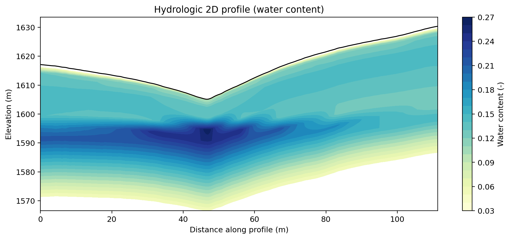
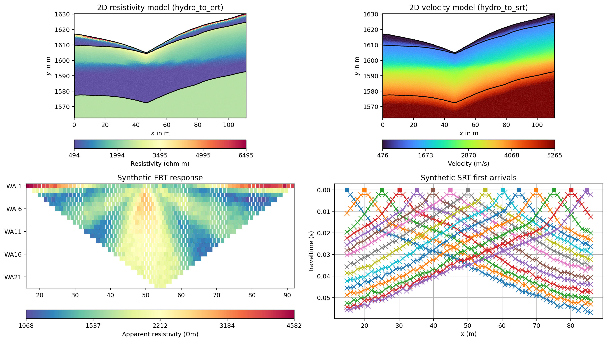
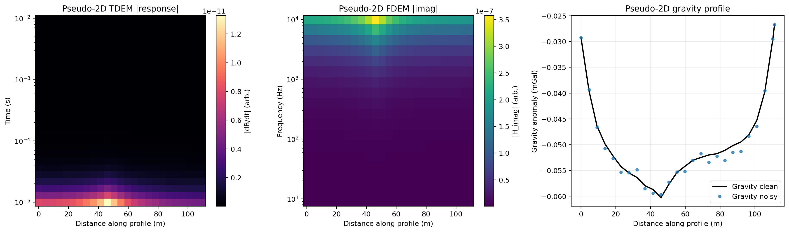

Note
Go to the end to download the full example code.
Hydrology to Multi-Geophysics Responses#
This example extracts one two-dimensional profile from a hydrological-model snapshot, builds a common mesh, and simulates ERT, SRT, TDEM, FDEM, and gravity responses. Each processing and forward-modeling stage is kept separate so the intermediate hydrological profiles and mesh properties can be inspected.
Step 1: Import packages and prepare the output folder#
sphinx_gallery_thumbnail_path = ‘auto_examples/images/Ex_hydro_to_multigeophys_fig_01.png’
import os
import sys
import numpy as np
import matplotlib.pyplot as plt
import pygimli as pg
from pygimli.physics import ert
import pygimli.physics.traveltime as tt
from scipy.interpolate import griddata
# Setup package path for development
try:
current_dir = os.path.dirname(os.path.abspath(__file__))
except NameError:
current_dir = os.getcwd()
if (
not os.path.exists(os.path.join(current_dir, "data"))
and os.path.exists(os.path.join(current_dir, "examples", "data"))
):
current_dir = os.path.join(current_dir, "examples")
parent_dir = os.path.dirname(current_dir)
if parent_dir not in sys.path:
sys.path.append(parent_dir)
from PyHydroGeophysX.core.interpolation import ProfileInterpolator, create_surface_lines
from PyHydroGeophysX.core.mesh_utils import MeshCreator
from PyHydroGeophysX.Hydro_modular import (
hydro_to_ert,
hydro_to_srt,
hydro_to_tdem,
hydro_to_fdem,
hydro_to_gravity,
)
output_dir = os.path.join(current_dir, "results", "hydro_to_multigeophys")
os.makedirs(output_dir, exist_ok=True)
rng_seed = 7
Step 2: Load one hydrological snapshot and extract a 2D profile#
data_dir = os.path.join(current_dir, "data")
water_content_4d = np.load(os.path.join(data_dir, "Watercontent.npy"))
porosity_3d = np.load(os.path.join(data_dir, "Porosity.npy"))
top = np.loadtxt(os.path.join(data_dir, "top.txt"))
bot = np.load(os.path.join(data_dir, "bot.npy"))
snapshot_index = 5
water_content_3d = np.asarray(
water_content_4d[snapshot_index],
dtype=float,
)
print(f"Water-content snapshot: {water_content_3d.shape}")
print(f"Porosity model: {porosity_3d.shape}")
print(f"Layer boundaries: {bot.shape[0] + 1}")
point1 = [115, 70]
point2 = [95, 180]
interpolator = ProfileInterpolator(
point1=point1,
point2=point2,
surface_data=top,
origin_x=0.0,
origin_y=0.0,
pixel_width=1.0,
pixel_height=-1.0,
num_points=220,
)
structure = interpolator.interpolate_layer_data(
[top] + [bot[index] for index in range(bot.shape[0])]
)
water_content_profile = interpolator.interpolate_3d_data(water_content_3d)
porosity_profile = interpolator.interpolate_3d_data(porosity_3d)
L_profile = np.asarray(interpolator.L_profile, dtype=float)
Fill missing values along the profile#
Missing values are filled independently within each model layer using linear interpolation along the profile. A single valid value is extended across that layer.
profile_arrays = {
"structure": np.asarray(structure, dtype=float).copy(),
"water_content": np.asarray(water_content_profile, dtype=float).copy(),
"porosity": np.asarray(porosity_profile, dtype=float).copy(),
}
for profile_name, profile_values in profile_arrays.items():
if profile_values.ndim != 2:
raise ValueError(
f"{profile_name} must be 2D, got {profile_values.shape}."
)
profile_index = np.arange(profile_values.shape[1], dtype=float)
for layer_index in range(profile_values.shape[0]):
row = profile_values[layer_index]
valid = np.isfinite(row)
if not np.any(valid):
raise RuntimeError(
f"{profile_name} layer {layer_index} is entirely NaN."
)
if np.count_nonzero(valid) == 1:
row[~valid] = row[valid][0]
else:
row[~valid] = np.interp(
profile_index[~valid],
profile_index[valid],
row[valid],
)
profile_values[layer_index] = row
profile_arrays[profile_name] = profile_values
structure = profile_arrays["structure"]
water_content_profile = np.clip(
profile_arrays["water_content"],
0.0,
0.8,
)
porosity_profile = np.clip(
profile_arrays["porosity"],
0.01,
0.6,
)
n_layers, n_profile = water_content_profile.shape
Step 3: Build the common 2D mesh#
n_boundaries = structure.shape[0]
mid_idx = max(1, min(4, n_boundaries // 3))
bot_idx = max(mid_idx + 1, min(12, n_boundaries - 2))
surface, line1, line2 = create_surface_lines(
L_profile=L_profile,
structure=structure,
top_idx=0,
mid_idx=mid_idx,
bot_idx=bot_idx,
)
mesh_creator = MeshCreator(quality=32, area=1.0)
mesh, _ = mesh_creator.create_from_layers(
surface=surface,
layers=[line1, line2],
bottom_depth=float(np.min(line2[:, 1]) - 10.0),
)
print(f"Profile points: {n_profile}")
print(f"Mesh cells: {mesh.cellCount()}")
mesh_centers = np.array(
[
[float(center[0]), float(center[1])]
for center in mesh.cellCenters()
],
dtype=float,
)
x_cell = mesh_centers[:, 0]
y_cell = mesh_centers[:, 1]
y_line1 = np.interp(x_cell, line1[:, 0], line1[:, 1])
y_line2 = np.interp(x_cell, line2[:, 0], line2[:, 1])
layer_markers = [0, 3, 2]
mesh_markers = np.full(
mesh.cellCount(),
layer_markers[2],
dtype=int,
)
mesh_markers[y_cell >= y_line2] = layer_markers[1]
mesh_markers[y_cell >= y_line1] = layer_markers[0]
mesh.setCellMarkers(mesh_markers)
unique_markers, marker_counts = np.unique(
mesh_markers,
return_counts=True,
)
print(dict(zip(unique_markers, marker_counts)))
Interpolate water content and porosity to the mesh#
mesh_profiles = {}
for profile_name, profile_values in {
"water_content": water_content_profile,
"porosity": porosity_profile,
}.items():
values = np.asarray(profile_values, dtype=float)
boundaries = np.asarray(structure, dtype=float)
expected_shape = (values.shape[0] + 1, values.shape[1])
if boundaries.shape != expected_shape:
raise ValueError(
f"Layer boundaries must have shape {expected_shape}, "
f"got {boundaries.shape}."
)
layer_centers = 0.5 * (
boundaries[:-1] + boundaries[1:]
)
x_profile_2d = np.repeat(
L_profile[np.newaxis, :],
values.shape[0],
axis=0,
)
interpolation_points = np.column_stack(
(x_profile_2d.ravel(), layer_centers.ravel())
)
query_points = np.column_stack((x_cell, y_cell))
mesh_values = griddata(
interpolation_points,
values.ravel(),
query_points,
method="linear",
)
nearest_values = griddata(
interpolation_points,
values.ravel(),
query_points,
method="nearest",
)
missing = ~np.isfinite(mesh_values)
mesh_values[missing] = nearest_values[missing]
mesh_profiles[profile_name] = mesh_values
wc_mesh = mesh_profiles["water_content"]
porosity_mesh = mesh_profiles["porosity"]
print(
"Water-content profile range: "
f"{water_content_profile.min():.4f} - "
f"{water_content_profile.max():.4f}"
)
print(
"Porosity profile range: "
f"{porosity_profile.min():.4f} - "
f"{porosity_profile.max():.4f}"
)
print(
"Water-content mesh range: "
f"{wc_mesh.min():.4f} - {wc_mesh.max():.4f}"
)
print(
"Porosity mesh range: "
f"{porosity_mesh.min():.4f} - {porosity_mesh.max():.4f}"
)
Visualize the hydrological profile#
layer_centers = 0.5 * (
structure[:-1] + structure[1:]
)
x_profile_2d = np.repeat(
L_profile[np.newaxis, :],
n_layers,
axis=0,
)
fig, ax = plt.subplots(figsize=(10, 4.5))
image = ax.contourf(
x_profile_2d,
layer_centers,
water_content_profile,
levels=25,
cmap="YlGnBu",
)
ax.plot(L_profile, structure[0], "k-", linewidth=1.2)
ax.set_title("Hydrologic 2D profile (water content)")
ax.set_xlabel("Distance along profile (m)")
ax.set_ylabel("Elevation (m)")
colorbar = plt.colorbar(image, ax=ax)
colorbar.set_label("Water content (-)")
plt.tight_layout()
profile_path = os.path.join(
output_dir,
"Ex_hydro_to_multigeophys_fig_01.png",
)
fig.savefig(profile_path, dpi=220, bbox_inches="tight")
plt.show()
The extracted snapshot preserves topography and vertical water-content structure along the selected profile.
{kind=link}

Step 4: Simulate ERT and SRT on the common mesh#
rho_parameters = {
"rho_sat": [100.0, 500.0, 2400.0],
"n": [2.2, 1.8, 2.5],
"sigma_s": [1.0 / 500.0, 0.0, 0.0],
}
vel_parameters = {
"top": {
"bulk_modulus": 30.0,
"shear_modulus": 20.0,
"mineral_density": 2650,
"depth": 1.0,
},
"mid": {
"bulk_modulus": 50.0,
"shear_modulus": 35.0,
"mineral_density": 2670,
"aspect_ratio": 0.05,
},
"bot": {
"bulk_modulus": 55.0,
"shear_modulus": 50.0,
"mineral_density": 2680,
"aspect_ratio": 0.03,
},
}
srt_data, velocity_model = hydro_to_srt(
water_content=wc_mesh,
porosity=porosity_mesh,
mesh=mesh,
profile_interpolator=interpolator,
layer_idx=[0, mid_idx, bot_idx],
structure=structure,
marker_labels=layer_markers,
vel_parameters=vel_parameters,
sensor_spacing=1.0,
sensor_start=15.0,
num_sensors=72,
shot_distance=5,
noise_level=0.01,
noise_abs=1e-5,
mesh_markers=mesh_markers,
verbose=False,
seed=rng_seed,
)
print(f"SRT data count: {srt_data.size()}")
ert_data, resistivity_model = hydro_to_ert(
water_content=wc_mesh,
porosity=porosity_mesh,
mesh=mesh,
profile_interpolator=interpolator,
layer_idx=[0, mid_idx, bot_idx],
structure=structure,
marker_labels=layer_markers,
rho_parameters=rho_parameters,
electrode_spacing=1.0,
electrode_start=15.0,
num_electrodes=72,
scheme_name="wa",
noise_level=0.03,
abs_error=0.0,
rel_error=0.03,
mesh_markers=mesh_markers,
verbose=False,
seed=rng_seed,
)
print(f"ERT data count: {ert_data.size()}")
Compare the ERT and SRT models and responses#
fig = plt.figure(figsize=(14, 8))
ax1 = fig.add_subplot(2, 2, 1)
pg.show(
mesh,
resistivity_model,
ax=ax1,
cMap="Spectral_r",
label="Resistivity (ohm m)",
)
ax1.set_title("2D resistivity model (hydro_to_ert)")
ax2 = fig.add_subplot(2, 2, 2)
pg.show(
mesh,
velocity_model,
ax=ax2,
cMap="turbo",
label="Velocity (m/s)",
)
ax2.set_title("2D velocity model (hydro_to_srt)")
ax3 = fig.add_subplot(2, 2, 3)
ert.show(ert_data, ax=ax3)
ax3.set_title("Synthetic ERT response")
ax4 = fig.add_subplot(2, 2, 4)
tt.drawFirstPicks(ax4, srt_data)
ax4.set_title("Synthetic SRT first arrivals")
plt.tight_layout()
ert_srt_path = os.path.join(
output_dir,
"Ex_hydro_to_multigeophys_fig_02.png",
)
fig.savefig(ert_srt_path, dpi=220, bbox_inches="tight")
plt.show()
The ERT and SRT models and measurements come from the same mesh and hydrological state.
{kind=link}

Step 5: Select profile stations for TDEM, FDEM, and gravity#
station_step = max(1, n_profile // 24)
station_idx = np.unique(
np.r_[
np.arange(0, n_profile, station_step),
n_profile - 1,
]
)
x_station = L_profile[station_idx]
wc_station = water_content_profile[:, station_idx]
porosity_station = porosity_profile[:, station_idx]
structure_station = structure[:, station_idx]
times = np.logspace(-5, -2, 28)
frequencies = np.logspace(1, 4, 18)
print(f"Profile stations: {len(x_station)}")
Simulate the pseudo-2D TDEM response#
tdem_noisy, tdem_clean, tdem_unc, tdem_cond = hydro_to_tdem(
water_content=wc_station,
porosity=porosity_station,
layer_boundaries=structure_station,
times=times,
sigma_w=0.05,
m=1.5,
n=2.0,
sigma_s=0.0,
source_radius=10.0,
noise_level=0.03,
seed=rng_seed,
verbose=False,
)
tdem_norm = np.linalg.norm(tdem_clean)
tdem_relative_l2 = (
np.nan
if tdem_norm <= 0
else np.linalg.norm(tdem_noisy - tdem_clean) / tdem_norm
)
print(f"TDEM matrix shape: {tdem_clean.shape}")
print(f"TDEM relative L2 noise: {tdem_relative_l2:.4f}")
Simulate the pseudo-2D FDEM response#
fdem_noisy, fdem_clean, fdem_unc, fdem_cond = hydro_to_fdem(
water_content=wc_station,
porosity=porosity_station,
layer_boundaries=structure_station,
frequencies=frequencies,
sigma_w=0.05,
m=1.5,
n=2.0,
sigma_s=0.0,
source_location=np.array([0.0, 0.0, 0.0]),
receiver_location=np.array([12.0, 0.0, 0.0]),
receiver_component="secondary",
waveform_type="dipole",
noise_level=0.03,
seed=rng_seed,
verbose=False,
)
fdem_norm = np.linalg.norm(fdem_clean)
fdem_relative_l2 = (
np.nan
if fdem_norm <= 0
else np.linalg.norm(fdem_noisy - fdem_clean) / fdem_norm
)
print(f"FDEM matrix shape: {fdem_clean.shape}")
print(f"FDEM relative L2 noise: {fdem_relative_l2:.4f}")
Simulate the pseudo-2D gravity response#
grav_noisy, grav_clean, grav_unc, density_contrast = hydro_to_gravity(
water_content=wc_station,
porosity=porosity_station,
layer_boundaries=structure_station,
station_positions=x_station,
rho_matrix=2650.0,
rho_water=1000.0,
rho_air=1.225,
sensor_height=1.0,
noise_level=0.02,
seed=rng_seed,
verbose=False,
)
print(
"Gravity range (mGal): "
f"{grav_clean.min():.5f} to {grav_clean.max():.5f}"
)
Compare the TDEM, FDEM, and gravity responses#
fig, axes = plt.subplots(1, 3, figsize=(16, 4.8))
tdem_image = axes[0].pcolormesh(
x_station,
times,
np.abs(tdem_clean).T,
shading="auto",
cmap="magma",
)
axes[0].set_yscale("log")
axes[0].set_xlabel("Distance along profile (m)")
axes[0].set_ylabel("Time (s)")
axes[0].set_title("Pseudo-2D TDEM |response|")
tdem_colorbar = plt.colorbar(tdem_image, ax=axes[0])
tdem_colorbar.set_label("|dB/dt| (arb.)")
fdem_image = axes[1].pcolormesh(
x_station,
frequencies,
np.abs(np.imag(fdem_clean)).T,
shading="auto",
cmap="viridis",
)
axes[1].set_yscale("log")
axes[1].set_xlabel("Distance along profile (m)")
axes[1].set_ylabel("Frequency (Hz)")
axes[1].set_title("Pseudo-2D FDEM |imag|")
fdem_colorbar = plt.colorbar(fdem_image, ax=axes[1])
fdem_colorbar.set_label("|H_imag| (arb.)")
axes[2].plot(
x_station,
grav_clean,
"k-",
linewidth=1.8,
label="Gravity clean",
)
axes[2].plot(
x_station,
grav_noisy,
"o",
markersize=3.8,
alpha=0.75,
label="Gravity noisy",
)
axes[2].set_xlabel("Distance along profile (m)")
axes[2].set_ylabel("Gravity anomaly (mGal)")
axes[2].set_title("Pseudo-2D gravity profile")
axes[2].grid(True, alpha=0.25)
axes[2].legend(loc="best")
plt.tight_layout()
em_gravity_path = os.path.join(
output_dir,
"Ex_hydro_to_multigeophys_fig_03.png",
)
fig.savefig(em_gravity_path, dpi=220, bbox_inches="tight")
plt.show()
The pseudo-2D panels summarize the TDEM, FDEM, and gravity responses along the same hydrological profile.
{kind=link}

Summary#
The same hydrological snapshot and profile now feed all five geophysical methods. Because preprocessing, mesh construction, individual forward models, and visualization are separated, any intermediate result can be inspected before continuing to the next method.